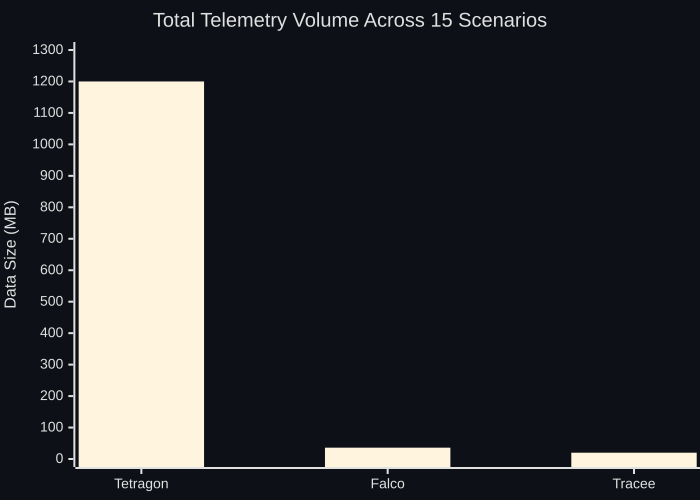

Container Escape Telemetry, Part 4: Volume, Signal-to-Noise, and Choosing a Tool
How much telemetry do Tetragon, Falco, and Tracee actually generate? Per-scenario volume breakdowns, signal-to-noise analysis, production rate estimates, the Falco rule gap, S15 stress test results, and recommendations by threat model.
This is Part 4 of the container escape telemetry series (overview). Part 1 covered isolation primitives and the eBPF observability model. Part 2 covered the lab and detection coverage matrix. Part 3 walked through per-scenario telemetry. This post is about the operational questions: how much data do these tools produce, what percentage of it matters, and which tool should you actually deploy?
The Volume Question
Parts 2 and 3 focused on what each tool sees. But there’s an equally important dimension: how much does each tool generate, and what’s the signal-to-noise ratio of that output? If you’re going to deploy any of these tools in production, the telemetry volume has direct implications for storage, bandwidth, and whether an analyst can actually find the escape signal in the noise.

Aggregate Numbers
| Metric | Tetragon | Falco | Tracee |
|---|---|---|---|
| Total events | 86,275 | 10,892 | 15,169 |
| Total data size | 1.2 GB | 36 MB | ~20 MB |
| Avg bytes per event | ~14,600 | ~3,500 | ~1,400 |
| Events inside scenario windows | ~64,000 | ~9,700 | ~15,100 |
| Events outside scenario windows | ~22,300 | ~1,200 | ~60 |
A naive reading says Tetragon is wildly wasteful at 1.2 GB to monitor 15 short-lived scenarios versus Falco’s 36 MB and Tracee’s ~20 MB. But when you decompose the data size gaps, they factor into two independent architectural decisions: event count and event size. Tetragon generates ~6x more events than Tracee and each event is ~10x larger. Those two multipliers compound into the ~60x difference, and they reflect fundamentally different design philosophies rather than inefficiency. Falco’s per-event size (~3,500 bytes) reflects the twelve custom rules and rule_matching=all, which produce richer output fields and multiple rule firings per event.
The out-of-scenario event count is particularly revealing. Tracee captured only ~60 events outside the scenario windows because its eBPF programs are scoped tightly to container-namespaced processes. Tetragon generated ~22,300, because its baseline policies (particularly cap_capable and wake_up_new_task) plus the capability-abuse kprobes continuously observe kernel-wide behavior. That ambient stream is valuable for baselining but expensive in volume.
A note on Tracee’s numbers: These reflect a properly scoped security_file_open policy with path prefix filters matching the same sensitive paths as Tetragon’s TracingPolicies. Without path filtering, Tracee generates ~3.76M events across all scenarios (dominated by S15’s openat flood producing 1.94M security_file_open events) and suffers ~10.1M dropped events, including the S15 nsenter escape. That’s a 248x event volume increase from a single policy misconfiguration. The S15 section later in this post covers what happens in detail.
Why Tetragon Events Are ~10x Larger
A single Tetragon process_kprobe event averages 14,614 bytes. That’s not bloat, it’s the cost of forensic self-sufficiency. Every Tetragon event can be analyzed in complete isolation without correlating against external context. That ~15 KB buys you:
- All 10 Linux namespace inodes with host/container booleans (~400 bytes)
- Full
permittedandeffectivecapability arrays listing every capability by name (~800 bytes for a privileged container) - The complete 8-field credential struct (uid/gid/euid/egid/suid/sgid/fsuid/fsgid)
- Parent process ancestry with binary paths and arguments
- Function-specific kprobe arguments (file paths on
do_splice, namespace type flags onsetns, filesystem type onmount)
A Falco event averages 3,881 bytes (higher than defaults due to the twelve custom rules and rule_matching=all): container name, image, container ID, user name, process name, full command line, and rule-specific output fields. Useful for alerting, but no raw namespace inodes and no deep capability context.
A Tracee event averages 1,403 bytes with a compact structure: two namespace inodes (mount + pid), container metadata, and a typed args array.
The architectural implication: Tetragon optimizes for forensic self-sufficiency per event, Falco optimizes for alert relevance with minimal overhead, and Tracee optimizes for behavioral breadth with compact events. None of these is the wrong answer. They’re different answers to different questions.
Per-Scenario Volume
This is where it gets interesting, because the volume story shifts depending on the escape type.
| Scenario | Tetragon | Falco | Tracee | Most Verbose |
|---|---|---|---|---|
| S06 Baseline | 1,127 | 76 | 29 | Tetragon (39x) |
| S01 cgroup release_agent | 1,235 | 102 | 59 | Tetragon (21x) |
| S02 CVE-2022-0492 | 1,263 | 143 | 166 | Tetragon (8x) |
| S03 nsenter | 571 | 114 | 90 | Tetragon (6x) |
| S04 Docker socket | 1,895 | 213 | 176 | Tetragon (11x) |
| S05 Host /proc | 547 | 96 | 54 | Tetragon (10x) |
| S07 Leaky Vessels | 1,746 | 68 | 8 | Tetragon (218x) |
| S08 DirtyPipe | 3,521 | 128 | 1,422 | Tetragon (2x) |
| S09 fsconfig | 5,711 | 81 | 2,305 | Tetragon (2x) |
| S10 Netfilter | 5,585 | 83 | 2,305 | Tetragon (2x) |
| S11 maskedPaths | 890 | 110 | 65 | Tetragon (14x) |
| S12 runc overwrite | 1,233 | 53 | 32 | Tetragon (39x) |
S13 --privileged post-exploit |
9,986 | 5,623 | 7,437 | Tetragon (1.3x) |
| S14 Excessive capabilities | 1,045 | 611 | 920 | Tetragon (1.1x) |
| S15 Syscall flood | 15,637 | 623 | 41 | Tetragon (381x) |
Tetragon dominates every scenario. That’s a direct consequence of its always-on kprobe policies. The S06 baseline, a clean unprivileged container doing nothing suspicious, still generated 1,127 Tetragon events versus 29 from Tracee. That 39x ratio on a clean container is the clearest measure of Tetragon’s observability philosophy: observe everything, filter later.
S07 (Leaky Vessels) shows this even more starkly: 1,746 Tetragon events versus 8 from Tracee (218x), driven by the capability-abuse policy’s sys_mount kprobe firing during container creation. Every mount() syscall during runc init becomes a Tetragon event, even though it’s completely benign.
The CVE exploit scenarios (S08-S10) show the tightest spread. Tracee’s behavioral hooks (magic_write, commit_creds, switch_task_ns) fire heavily during active exploitation, plus the path-filtered security_file_open still generates meaningful volume from the exploit binaries’ filesystem operations. These scenarios are where all three tools are actually busy doing useful work, rather than recording ambient kernel activity.
The capability abuse scenarios (S13, S14) are the noisiest for all tools. S13’s apt-get install keyutils subprocess tree generated thousands of process lifecycle events across every tool. The difference between tools narrows to nearly 1:1 when the actual workload is complex. Tetragon’s 9,986 versus Tracee’s 7,437 for S13 is only a 1.3x ratio, compared to the 39x ratio on baseline.
S15 (syscall flood) is the most instructive comparison. With filtering, Tracee generated just 41 events, the fewest of any tool, because the openat flood on /dev/null matched no path filter. Without filtering, Tracee would have generated 1,940,289 events and lost 10.1M more. That’s a 47,000x difference from a single policy change, and the strongest evidence that policy tuning isn’t optional.
Signal-to-Noise
The operational question: what percentage of each tool’s output is actually escape-relevant?
| Metric | Tetragon | Falco | Tracee |
|---|---|---|---|
| Dominant noise source | cap_capable + sys_mount kprobes (~50%) | Process lifecycle + runc init (~40%) | Process lifecycle from subprocess trees (~60%) |
| Signal density (escape events/MB) | ~5 | ~3 | ~80 |
Tracee’s signal density is the highest at roughly 80 escape-relevant events per megabyte versus Tetragon’s ~5 and Falco’s ~3. With path-filtered security_file_open, Tracee’s output is almost entirely behaviorally relevant events: process exec/exit, namespace transitions, credential changes, and security-sensitive file access. The noise that remains is mostly process lifecycle events from container subprocess trees (apt-get, dpkg, etc.), which is unavoidable for any tool that tracks process creation.
Critical caveat: This signal density advantage depends on proper policy tuning. Without path filters on security_file_open, Tracee’s signal density collapses: the unfiltered configuration generated 248x more events, with security_file_open noise accounting for ~98% of total volume. Under adversarial conditions (S15 syscall flood), the unfiltered configuration caused 10.1M dropped events including the escape itself. See the S15 section below.
Tetragon’s low signal density is a deliberate design choice. The cap_capable events that dominate its output serve two purposes: they provide a baseline behavior profile that makes anomaly detection possible (the 13x spike during DirtyPipe), and they capture capability check failures indicating privilege boundary enforcement. The new sys_mount kprobe from the capability-abuse policy also contributes significant volume during container lifecycle events. Disabling or rate-limiting cap_capable in the baseline policy would cut total volume substantially while preserving all escape-specific detection hooks. That’s the single highest-impact tuning change for a Tetragon production deployment.
Falco’s signal density dropped compared to its pre-custom-rules configuration because the twelve new rules and rule_matching=all increased total volume while many of the new detections fire on runc initialization noise. Adding not proc.name in (runc, ...) exclusions and dropping the debug lifecycle rules would improve the ratio significantly.
Production Rate Estimates
If you extrapolate the observed rates to a production cluster with moderate container churn:
| Tool | Estimated Production Rate | With Tuning |
|---|---|---|
| Tetragon | 60-120 MB/hour/node | 10-25 MB/hour (disable baseline cap_capable, rate-limit sys_mount) |
| Falco | 3-8 MB/hour/node | <2 MB/hour (runc exclusions + drop Debug rules) |
| Tracee | 5-20 MB/hour/node | 2-8 MB/hour (path-filter security_file_open) |
These are rough estimates from 15 short-lived scenarios, not sustained production measurements. But they give you the right order of magnitude for capacity planning. The volume data makes the architectural tradeoffs concrete and measurable. Tetragon gives you forensically complete events at the cost of storage. Falco gives you rule-driven alerting at moderate overhead. Tracee gives you the best signal-to-noise ratio with compact events, but this depends on proper policy tuning – without path filtering on security_file_open, volume explodes to 2.6 GB with catastrophic event loss under adversarial conditions.
The Falco Rule Gap Was Configuration, Not Engine
This might be the most actionable finding from the entire project. Falco’s default ruleset detected only 5 of 13 scoreable scenarios (S01-S14, excluding S06 baseline and S15 stress test). But the gaps were entirely configuration-driven, not engine limitations. Every syscall that Tetragon and Tracee used for detection, splice, fsopen, symlink, setns, is supported by Falco’s event model. The difference is that Tetragon and Tracee ship with CVE-specific hooks and behavioral signatures, while Falco relies on rules that must be authored.
I wrote twelve custom rules and rule changes, enabled rule_matching=all (so overlapping rules fire on the same event instead of just the first match), and took Falco from 5/13 to 11/13. Scoring note: S04 counts as detected (5/13 baseline) because Falco’s default “Docker Socket Access from Container” rule fired on runc init, even though my custom rule targeting the in-container socket abuse didn’t work. S12’s custom rule was not validated because the kernel blocked the write before Falco could observe it, the score counts S12 as missed. S07 is missed by all tools.
| Change | Scenario | Type | Result |
|---|---|---|---|
| Add openat2 + open_read/open_write to Docker socket rule | S04 | Bug fix | Still missed; fd.name path resolution issue |
| New rule: evt.type = splice from container | S08 | New rule | Detected (2 CRITICAL alerts) |
| New rule: evt.type in (fsconfig, fsopen, fsmount) | S09 | New rule | Detected |
| New rule: AF_NETLINK/SOCK_RAW socket from container | S10 | New rule | Detected |
| New rule: symlink/symlinkat targeting /proc or /sys | S11 | New rule | Detected |
| New rule: open_write on /proc/self/exe | S12 | New rule | Not validated (write blocked before Falco observed) |
| New rule: Keyctl Invocation from Container | S13 | New rule | Detected (504 alerts) |
| New rule: Kernel Module Load from Container | S13 | New rule | Did not fire (modprobe fails before init_module) |
| New rule: BPF Syscall from Container | S13 | New rule | Did not fire (S13 reads /proc/kallsyms, not bpf()) |
| New rule: Kernel Log Buffer Read from Container | S13 | New rule | Detected (1 alert for /dev/kmsg) |
| New rule: Host Process Environ Read from Container | S14 | New rule | Detected (3 alerts for /proc/1/environ) |
| New rule: Host Process Maps Read from Container | S14 | New rule | Detected (3 alerts for /proc/1/maps) |
A critical lesson from validation: runc itself calls fsopen, fsconfig, symlink, and creates netlink sockets during normal container initialization. All new rules need the exclusion not proc.name in (runc, "runc:[0:PARENT]", "runc:[1:CHILD]", "runc:[2:INIT]"). Without this, each container start generates approximately 18 false positive events. If you’ve read my post on building resilient suppressions, you know this is exactly the kind of suppression that needs to be well-documented and regularly validated.
The runc noise problem exists in every tool, not just Falco. Tetragon’s cap_capable kprobe and sys_mount kprobe generate roughly half its total volume from routine capability checks and container lifecycle mounts. Tracee’s security_file_open accounts for the majority of events when unfiltered, mostly from package managers and compilers. Detection rules that look precise in a lab become noisy the moment they encounter real container lifecycle activity. The gap between “rule works” and “rule is production-ready” is where most operational effort goes.
One YAML syntax pitfall worth noting: Falco’s folded scalar (>) syntax for multi-line condition and output fields is fragile. Two of the custom rules initially crashed the entire Falco rules engine because the output: > line ran onto the same line as the end of the condition: > block. Falco rejected the entire custom-rules.yaml and crash-looped 27 times before I caught the error in the container logs. The fix was a single newline. Silent-until-fatal configuration errors are a real operational risk when hand-authoring Falco rules.
For teams already running Falco, these twelve rule changes close most of the gap without changing infrastructure. That’s a meaningful finding.
S15: Syscall Flood Stress Test
Everything up to this point assumes the tools are operating under normal conditions. S15 answers a different question: what happens when an attacker deliberately floods syscalls to overwhelm eBPF ring buffers? This is a realistic evasion technique. Any unprivileged container can call openat("/dev/null") in a tight loop at 100,000+ operations per second. If that’s sufficient to cause a detection tool to miss a concurrent escape, it’s a practical blind spot, not a theoretical one.
The Test Design
Seven phases in two groups:
Phases 1-3 (unhooked): getpid() at 1K, 100K, and 1M calls (~8.2M syscalls/sec). None of the three tools hook getpid, so these test whether unhooked syscall floods affect tool stability at all.
Phases 4-5, 7 (hooked): openat(/dev/null) at 100K, 1M, and 10M calls (~101K syscalls/sec). All three tools hook openat in some form, generating real ring buffer pressure from events that enter the pipeline.
Phase 6 (the critical test): 1M openat() flood running concurrently with an nsenter -t 1 -m -u -i -p escape attempt. The question: can the tool see the escape during the flood?
Results
| Tool | S15 Events | Events Dropped | Drop Rate | nsenter Captured? |
|---|---|---|---|---|
| Tetragon | 15,637 | 0 | 0% | Yes (full chain) |
| Falco | 623 | 895,813 | ~68% at peak | Yes (4 nsenter alerts) |
| Tracee (filtered) | 41 | 0 | 0% | Yes (exec + 4x setns) |
| Tracee (unfiltered) | 1,940,289 | 10,127,573 | ~84% | No (escape events lost) |
Tetragon lost zero events. Its in-kernel filtering means events that don’t match a TracingPolicy never enter the ring buffer. The openat floods generated only process lifecycle events (exec/exit), not per-syscall events, because no TracingPolicy matched openat on /dev/null. The nsenter escape was captured with full forensic detail: process_exec for the nsenter command, process_kprobe events for the namespace operations, and the complete process tree.
Falco dropped ~896K events but preserved all security-critical detections. Its buffer management prioritizes process lifecycle events (execve, clone/fork) over file operation events (open, close). During peak flood, 68% of events were dropped, but execve_exit and clone_fork_exit drops were zero. The nsenter escape fired 4 “Nsenter Execution in Container” alerts. This is a good engineering tradeoff: you lose visibility into which files were accessed during a flood, but you don’t miss the attacker spawning nsenter.
Tracee’s result depends entirely on policy configuration. With security_file_open scoped to sensitive path prefixes, Tracee captured the nsenter escape with zero dropped events: 41 events total including sched_process_exec, 4 setns calls, and 4 switch_task_ns events. The openat flood on /dev/null matched no path filter and generated zero events, so the perf buffer never filled.
Without path filtering, the outcome was catastrophic: 10.1M events lost (84% loss rate), and the nsenter escape was among the losses. Only 2 events from the escape container survived. The unfiltered security_file_open hook captured 1.94M openat events from the flood, overwhelming the perf buffer and drowning escape-critical events from a different container.
Configuration vs Architecture
We ran S15 twice with Tracee: once with security_file_open unfiltered, and once with path prefix filters scoping it to the same sensitive paths that Tetragon monitors. The difference was dramatic: from 10.1M dropped events and a missed escape to zero drops and full capture.
The configuration argument (in Tracee’s favor): With proper path filtering, Tracee matched Tetragon’s S15 outcome: zero drops, escape captured. The unfiltered policy was a testing oversight, not a Tracee limitation. Any tool will struggle if you hook every file open on a system doing 500K+ openat/sec. The fix is trivial: add path filters.
The architectural argument (still relevant): Even with a perfectly tuned policy, Tracee’s perf buffer is shared across all event types with no prioritization. An attacker who knows which events Tracee hooks can target any of them. Our filtered policy still enables 30 event types. Removing security_file_open closes the openat vector, but an attacker could flood clone, pipe, dup2, symlink, or any other hooked syscall. The attack surface for buffer flooding is proportional to the number of hooked events, and Tracee’s value proposition is broad hook coverage. Tetragon’s in-kernel filtering and Falco’s per-category buffer prioritization are structural defenses that work regardless of which syscall the attacker floods. Tracee lacks an equivalent mechanism.
What we validated: Path-filtering security_file_open reduced Tracee’s total events from 3.76M to 15,169 across all 15 scenarios, a 99.6% reduction, with zero lost events and no detection regressions. Every escape the unfiltered policy detected, the filtered policy also detected. This is the single highest-impact tuning change for a Tracee deployment.
The practical takeaway: if you deploy Tracee, audit your policy for unfiltered high-frequency hooks. security_file_open without path filters is the most obvious one, but any event that fires on routine container operations at high rates is a potential flooding target. And if your threat model includes deliberate evasion by sophisticated attackers, Tracee’s shared perf buffer without event-type prioritization is a structural limitation that policy tuning can reduce but not eliminate.
Recommendations
No detection engineering team is going to deploy all three of these tools. Most teams will pick one, maybe two. The right choice depends on your threat model, your SIEM and log pipeline, and your budget. Here’s how I’d think about it.
Start With the Environment, Not the Tool
Before picking a tool, the more important question is: what are you actually running in these containers, and where?
Trusted first-party code in isolated containers. If your containers are running your own code, well-isolated from production databases and sensitive infrastructure, a lighter-touch approach works. Falco with its default rules plus a few CVE-specific additions gives you solid coverage for misconfiguration-based escapes and common attack patterns without a heavy telemetry footprint. The primary threat is misconfiguration and lateral movement, not adversarial code execution.
Untrusted or third-party code with network access to production. An attacker who escapes a container that can reach your production database is in a fundamentally different position than one who escapes into an isolated build worker. In these environments, Tetragon’s enforcement capability (killing exploit processes in-kernel before they complete) and forensic depth become much more valuable. Same for Tracee’s behavioral detection: untrusted code is where you’re most likely to encounter novel exploit techniques that don’t match known CVE patterns.
Multi-tenant shared infrastructure. The highest-risk case. You probably want Tetragon’s enforcement capability combined with either Falco or Tracee for complementary detection coverage. You need to both prevent escapes and have multiple detection layers in case one tool’s blind spots align with an attacker’s technique.
Tool-Specific Guidance
If you need enforcement and forensic depth, choose Tetragon. Its kprobe-level argument capture gives you the richest per-event context: file paths on do_splice, namespace type flags on setns, full credential sets on every event. It has in-kernel SIGKILL enforcement for killing exploit processes mid-syscall. The tradeoff is that you need to invest in TracingPolicy authoring, and the telemetry volume (60-120 MB/hour/node untuned) requires a log pipeline that can handle it. If your SIEM is already sized for high-volume security telemetry, Tetragon is the strongest single-tool choice.
If you need fast time-to-value and broad coverage, choose Falco. 400+ community rules, MITRE ATT&CK mapping, and broad integrations (Kubernetes admission webhooks, SIEM forwarding, PagerDuty) make Falco the easiest to deploy and start getting value from immediately. Telemetry volume is low (3-8 MB/hour/node untuned, <2 MB/hour tuned, the lightest when tuned), which matters if your log budget is constrained. You will need to supplement its default rules with CVE-specific additions like the ones documented here, but the barrier to writing Falco rules is low.
If you need behavioral detection resilient to exploit variations, choose Tracee. magic_write and commit_creds operate at a fundamentally different abstraction level than syscall-matching. They detect exploit consequences, unauthorized page cache modifications, credential struct transitions, rather than specific syscall sequences. That’s the kind of telemetry you want when the next CVE doesn’t look like any of the ones you’ve written rules for. With proper policy tuning (path-filtered security_file_open), volume drops to 2-8 MB/hour/node, which is comparable to Falco’s tuned output. However, the S15 stress test results are worth weighing: without policy tuning, Tracee’s broad hook coverage makes it vulnerable to adversarial syscall flooding. Tetragon’s in-kernel filtering provides the strongest structural guarantees against deliberate evasion.
Minimum Viable Detection Set
Whichever tool you pick, monitor these from container-namespaced processes:
setns()andunshare()with namespace flagsmount()with filesystem type “cgroup”- File writes to
release_agent/notify_on_release/cgroup.procs - File opens on
/proc/1/root/*,/proc/self/exe(write), anddocker.sock splice()fsopen()/fsconfig()symlink()targeting /proc paths
For capability abuse detection, add:
mount()of block devices orproc/tmpfsfrom containers- File opens on
/proc/1/environand/proc/1/maps - Raw socket creation (
AF_PACKET) init_module/finit_modulekeyctlinvocations
This covers all five successful escapes, five of six CVE patterns (S07 Leaky Vessels remains undetectable by observation-based tools), and both capability abuse scenarios from this research.
Conclusion
The core takeaway from this research is that no single eBPF-based container security tool provides complete escape detection, and the reasons for each tool’s blind spots are architecturally instructive. Tetragon’s precision requires manual policy authoring per CVE pattern. Tracee’s behavioral layer catches exploit consequences that syscall-matching tools miss. Falco’s gaps are configuration-driven and fixable, which is actually the most operationally useful finding.
Think about it the same way we think about allowlist vs denylist detection in any other domain. Tetragon and Falco’s per-CVE rules are denylist detections. They look for specific known-bad patterns. Tracee’s magic_write and commit_creds are closer to allowlist thinking because they detect when something violates expected behavior (writes should go through normal permissions, credentials shouldn’t change unexpectedly). Whichever tool you pick, understanding both approaches will make your detections stronger.
Across all 15 scenarios and tens of thousands of events, every tool left gaps that another tool covered. The capability abuse scenarios (S13, S14) reinforced this: tools optimized for detecting namespace boundary violations have weaker coverage for in-namespace capability abuse, which is arguably the more common real-world threat. The S15 stress test added a third dimension: policy tuning isn’t optional. An unfiltered Tracee policy turned a zero-drop tool into one that lost 10.1M events and missed the escape entirely. The same tool, with path-filtered security_file_open, captured the escape cleanly. Configuration is the first line of defense against adversarial flooding.
You’re not going to deploy all three. But knowing what your chosen tool misses, why, and what configuration changes can close those gaps: that’s what lets you compensate with other controls.
Future Research
Performance impact. Running eBPF-based security tools in production has a cost: CPU overhead, memory consumption, and latency on hooked syscalls. Tetragon’s 8 TracingPolicies with 31 kernel function hooks will have a different performance profile than Falco’s broader syscall driver or Tracee’s 330+ tracepoints. S15 provides some data points on ring buffer behavior under load, but I didn’t measure CPU overhead, memory consumption, or syscall latency. If you’re evaluating these tools for deployment, performance benchmarking under your actual workload is a separate and necessary exercise.
Enforcement and prevention. Some of these tools can do more than observe. Tetragon can kill processes mid-syscall, and commercial platforms built on Tracee and Falco offer policy enforcement. This research focused entirely on what telemetry each tool generates, not on whether it can stop an escape in progress.
Commercial and paid tools. This research only covers open-source tools. There’s an entire ecosystem of commercial container security platforms (Aqua, Sysdig Secure, Prisma Cloud, among others) that build on these open-source engines or use proprietary collection methods. I didn’t test them and can’t speak to them.
False positive rates in production. The 15 scenarios ran in isolated VMs with controlled workloads. The runc init false positives are a taste of what production looks like, but real environments generate far more noise. Whether a detection signal that works cleanly in a test lab holds up under production noise can only be answered by running it in your environment.
Further Reading
- Tetragon TracingPolicy Reference
- Falco Rules Documentation
- Tracee Events and Behavioral Signatures
- CVE-2024-21626 (Leaky Vessels) Technical Analysis
- CVE-2022-0847 (DirtyPipe) Writeup
- Building Resilient Detection Suppressions
LLM Disclosure
Claude (Anthropic) was used throughout this project to assist with lab setup and automation, telemetry analysis and correlation, and authoring this blog series.
Part 5 covers the practical tuning side: what each tool ships with by default, what you have to build yourself, every configuration pitfall we hit, and specific tuning recommendations per tool. Part 6 pressure-tests these findings against TeamPCP, a real threat actor whose kill chain maps directly to our lab scenarios.